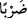

Bazıları der ki, burada “
” veba (taûn) hastalığıdır. O devirde çoğu hastalıklar
veba idi. İnsanlar bu hastalığın kendilerine bulaşmasından endişe ederlerdi. Fakir
(Bursevî) der ki, meşhur olan vebanın İsrailoğulları döneminde yaygınlaştığıdır. Önceki
dönemlerle ilgili olarak yalnız bir rivâyet vardır. Hz. Peygamber (s.a.) şöyle buyuruyor:
“Veba hastalığı İsrailoğullarına yahut sizden öncekilere gönderilen bir azaptır.”[212]
91, 92. Yavaşça putlarının yanına vardı. (Oraya konmuş yemekleri görünce:)
Yemiyor musunuz? Neden konuşmuyorsunuz? dedi.
“Yavaşça” ve gizlice “putlarının yanına vardı.” “ ” kelimesinin aslı hile ve
kurnazlıkla bir şeye meyletmektir. Kelime tilkinin gizlice ve kurnazca gidip işe
koyulmasından alınmıştır. Kâmûs’ta
“
” denilir ki bir şeyden dönüp meyletmek, demektir. Tâcü’l-
mesâdir’de der ki: “
” Tilkilik yani tilki gibi hile yapmaktır. “
”, kelimesi
ise gizli bir şeyin yanına gitmektir. et-Tehzîb’de der ki: “
”, hikaye ve destan
etmek demektir.
İbrâhim (a.s.) onları süslenmiş ve yemek sofraları önlerine konmuş halde görünce
alaylı bir şekilde onlara “Yemiyor musunuz?” Bu yemeklerden niçin yemezsiniz? dedi.
Putperestler bereket hâsıl olması için yemeklerini putların yanına koyarlardı.
“Neden konuşmuyorsunuz?” Yani soruma neden cevap vermiyorsunuz? Size ne oldu
ki söz söylemezsiniz ve bana cevap vermezsiniz, “dedi.”
93. Bunun üzerine, yanlarına gelip sağ eliyle vurdu (kırıp geçirdi.)
Burada mastar, fâil mânâsındadır. Yani “
” kelimesi “
” mânâsındadır. Yâni,
“İbrahim (a.s.) putlara fiili ve fiziki olarak kuvvetli ve şiddetli bir darbe yaptı”
demektir. Çünkü sağ el, sol elden daha kuvvetli ve şiddetlidir. Aletin (el) kuvvetli
oluşu, fiilin de kuvvetli ve şiddetli olması demektir.
Burada “yemin” kelimesinin “kuvvet ve metânetle vurdu” anlamına geldiği de
söylenmiştir. Yemine “yemin” denilmesi de bu sebepledir. Zira yemin, sözü takviye ve
teyit etmektedir. Denildi ki, yemin olarak yorumlanmasının bir sebebi de âyette geçen şu
ifadedir: “Allah’a yemin ederim ki, siz ayrılıp gittikten sonra putlarınıza bir oyun
oynayacağım!” (el-Enbiyâ 21/57).
Putperest kavim bayram ve panayırlarından puthâneye dönünce putlarını kırılıp parça